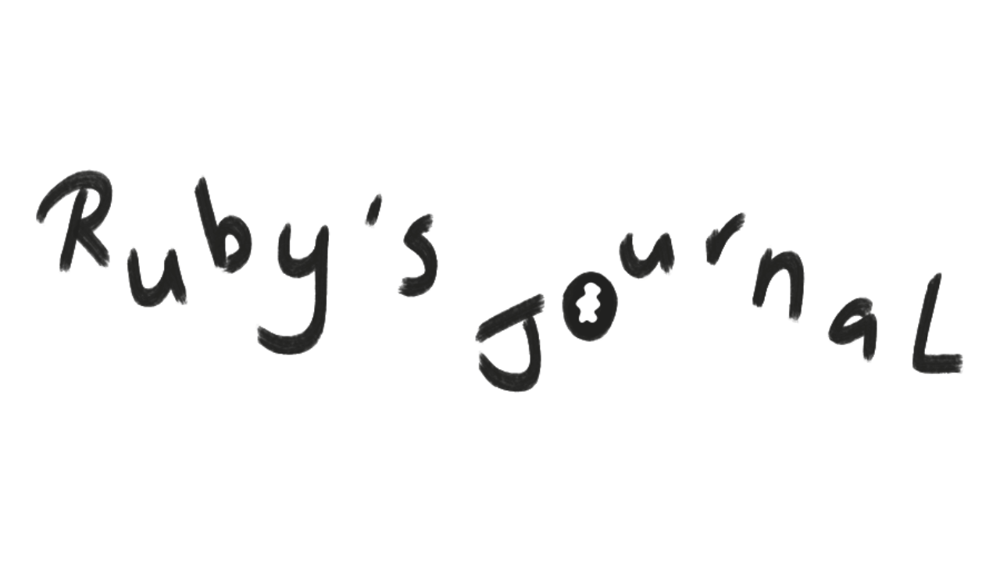

Assignment 3 | Ruby Holling | Web design 1 | 300458558

Week One
Week one of web design included an introduction/overview of the course. There was also an icebreaker for creating name tags on Figma. Sadly, we made them ourselves instead of with other peers as Haowei's permission on Zoom didn’t allow her to make breakout rooms. We then ran through the course assignments 1,2,3, which we will have over the next 12 weeks. Haowei also mentioned the blog submissions we should keep weekly to put towards our assignment 3. This was suggested not to do it last minute, so I am writing this now! Running through the class overview helped me understand what this course is about. I was apprehensive about web design as it was all new to me. I have done coding before, but back in the first year of 2018, and it was only HTML, I was nervous that I may be out of my depth. Figma is also a program I have never used before, so even making the name tags got me flustered. But like anything new, I am excited to try this course and push myself further outside my comfort zone to develop my learning and skills as a designer.

Week Two
Week two of web design included a longer lecture with a few more components than last week. We touched in depth more about our research report for assignment 1. Again, our journal entries were touched on as to how we will present them within our assignment three, so I want to make a conscious effort to keep my entries flowing as they are on the top of my head. Going through the history of web design was very interesting. Seeing how technology development has come a long way over the decades is incredible. From there, creating personas in breakout rooms was fun and helpful in understanding how to create these within our research report. It was noted by our group to make sure our goals and motivations are different, and this is something I will keep in mind when creating mine. After presenting, the other small conversation about AI and CHAT GPT was useful. These are tools I have not used much within my design practice, so if there comes a time when I do, it remains crucial it is only used as a tool to help expand my learnings and not create work for me. I made a list of a few things to do before next week’s class. This consists of the coding lecture, followed by a quiz! From there, I will start drafting the persona I will create from my assignment 1: research report.
The coding lecture introducing Visual Studio code was insightful and helpful. I have never used Visual Studio code before, but I installed it onto my laptop to get a head start on familiarising myself with the program. The shortcut of (! Enter) is a helpful tip to set up my document quickly. It also was great to familiarise myself again with the basics of HTML and how to keep my folders organised for future coding.

Week Three
During our week three class, our lecture reviewed web design history from 1998 to 2008. I found this interesting as I learned new terms, such as favicon. I have always noticed this with websites in my browser tags, but I needed to learn the correct terminology. I was also very interested in the difference between WEB 1.0 and WEB 2.0 and learned more about their definitions and meanings within web design. Also, I learned the correct term for CMS (Content Management system). I have dabbled with WordPress and other platforms, such as Square Space, so it was interesting to learn that these systems are designed to create website platforms without the complete coding required. Once we went through the lecture, the workshop allowed us to draft some Ven diagrams with last week's workshop. Based on Granny Linda's persona, we described different goals to determine the result for both the designer and the user. This was extremely helpful when starting my Ven diagram in assignment 1: research report. This information will influence my design decisions and thinking as I continue this project.
It was beneficial to learn to list items in HTML. I have never done this before within coding, and it was great to understand how to include hyperlinks within a list. Using a link layout could be helpful in the future of this course, so it was great to cover something new and how I could apply it to my future designs.

Week Four
During our week four class, our lecture reviewed web design history from 2009 to present. It was interesting to see the development, especially as this is the time technology became prominent in my life. I noticed many familiar aspects, but it was great to understand the terms behind them, such as flat design from Microsoft. After the lecture, we discussed the user journey and user flow: my next steps for developing my assignment one research report. I need to build my user persona and Venn diagram further to understand how my user will have a successful outcome within my website. After some advice from the tutors, my users will take steps to learn from my website and reading pages, which will complete their journey. I needed clarification because I am more familiar with e-commerce websites, and their completion is a purchase, for example. This is new learning for me. I plan to develop a strong user journey, allowing my user flow to be successful.
The CSS box model coding lecture developed my learning as we introduced CSS. I have never used CSS before, and it was interesting to understand that CSS creates all of a page's “design” aspects. Getting clarification on margins and padding was great, as I could take this knowledge into any future coding activities.

Week Five
At this stage in my assignment, I have completed my user persona and Venn diagram. For the last week, I have created a journey map and user flow, which is new to me. I have never used Figma before, so I hope everything goes smoothly. I may review my user persona and Venn diagram to ensure everything is on the right track to place into the other parts of this assignment. Developing this assignment has been a journey, but it has also made me realise how important planning is to create a successful web design. I now understand that web design has more of a purpose than looking aesthetic. It is made for people, and we must question how that can be achieved to provide users with the best experience on a website.
Watching the CSS grids lecture was helpful; this is very new to me, and I learned loads, especially being able to structure the grids in a certain way. It is beneficial to watch all the coding taking place, and this is something I could use when I code one of my projects in the future of this course.

Week Six
After handing in our first assignment, it was time to create wireframes for our website after being introduced to Assignment 2.1. During our lecture, we reviewed many components that make up good web design, such as colour and typography. Haowei briefly ran over our assignment two, and our job over the holidays is to start with our wireframes. I am still getting my head around Figma, so that it will be a challenge, but I am excited to begin visualising what my end website may look like. I have never produced wireframes before, so I will develop my learning significantly and enable me to understand how to plan and visualise appropriately for a good functioning website in the future.
Learning about the basics of GitHub was helpful; I have never used GitHub before, so I need to explore it further to understand it properly. It was great to get an overview, though, and I will connect with the video again if I will be coding my assignment three blog/journal.

Week Seven
After the mid-trimester break, it was back to class. We discussed this class more about composition and how website components can be laid out. I also found the term hidden affordance interesting as I did not know that was the term for icons, such as the three lines for the drop-down menu. We reviewed what we needed to hand in for our assignment, which was helpful as it broke everything down. At this stage, I am still exploring my wireframes and getting used to the Figma software. Hopefully, by the end of the week, my designs will start taking shape and will be something to be proud of as we develop our website. I still need to write my written rationale, produce more iterations, and produce a high-fidelity final design.

Week Eight
After finishing and handing in assignment 2.1, our new scheme was introduced, the CMS of Coding element for our website design. After completing my wireframes, style guides and high-fidelity prototype on Figma, I learned a lot from that assignment, which will help guide me through the next one. Our choices for this assignment are to create our website on a CMS platform (Web flow or Editor X) Or code the website. From my initial thoughts, I want to use a CMS platform as that will help me understand the fundamentals of web design a bit better than coding, but if I choose to go with the CMS decision, I will then have to code my blog, which I am still looking forward to. I have learned so much over the past few assignments and am excited to see my website come to life.
In part two of the CSS grids video, it was beneficial to understand how they can become responsive. Learning more about CSS is helpful because it is still something I am learning to understand, but I am now becoming more confident in it and how I can apply this to my future designs.

Week Nine
In this week’s lecture, reviewing labelling files correctly was helpful as I sometimes get carried away during my assignments and don’t prioritise labelling my files correctly until the last minute. I am still in the process of working on my project, and I feel as though I am behind more than usual due to sickness. But I’m glad I decided to create my website on Editor X. I enjoy using CMS platforms, so starting there has been enjoyable. I still need to understand the platform, so it will take me a while to get used to it, but the development stages of my website have begun, and I will continue to progress my learning through assignment 2.2.

Week Ten
This week in class was the overview of the Assignment 2.2 submission and what we need for our final hand-in. It was also helpful to recap what our blog content should consist of for our last assignment. It was nice to see examples of previous work. Since I am choosing CMS, I will be coding my third assignment. I am nervous about this, but I also enjoy coding. I have never created a responsive blog before coding, and it has been a long time since I have coded, so I am expecting some troubles but also looking forward to seeing what I can produce after learning about more code through the lecture videos and quizzes.

Week Eleven
This week in class, we had presentations of everyone’s final Website designs for Assignment 2.1. Unfortunately, I have an extension due to illness, so it was time to finalise my website and keep up-to-date with my progress report that needs to be submitted within the hand-in. This week, I will continue to improve my CMS website and keep it closely followed by my Figma final design and what I learned throughout that previous assignment. A few days passed since I last logged in to my journal, and I had finalised my CMS website on Editor X. I had a few troubles with responsive design and did not consider it when I started designing. I was caught up in everything else, and my mobile and tablet versions did not respond correctly. After fixing the issue, I now will consider that mistake in the future to not make it again.

Week Twelve
This week was our final week of web design. I have learnt so much throughout this course, which has been valuable. I never truly understood how important web design is, and this is something I now consider every time I view a website. Responsive design has been a big learning curve for me, and I realise how important it is, considering there are all types of screen sizes. I had to create a CMS website for another course, and web design helped me a lot when making this. Web design has pushed me outside my comfort zone and has been a big learning curve. I am grateful to have learned so many new things through the lectures and weekly coding videos. It is time to create my blog through code; I am excited to challenge myself further and see what I can create using HMTL and CSS.
